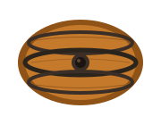
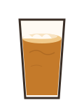
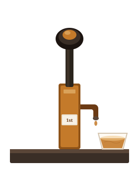
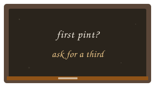

The beer
What it actually is
Forget the vocabulary. You do not need to know what a fuggle is. You do not need a beard, a tankard or an opinion on sparging.
-

It is live.Yeast is still in the cask. That is why it changes from day to day and why a tired pint is a different drink from a fresh one.
-

It is usually cheaper than craft keg.You are not paying for nitrogen, branding or a 330ml can designed for a photograph.
-

It is local more often than lager is.A village pub can put a beer on from ten miles away. That is not a slogan. It is the barrel in the cellar.
-

It is meant to be drunk in a room with other people.That is the point of the pub. The beer is the excuse.
If the first one you try is stale, that is the cellar, not the style. Ask the person behind the bar what went on today. A good pub will tell you.
Timing
Why this, why now
Cask ale has spent years being treated as a product for older men who already know what they like. Meanwhile the people who will decide whether village pubs still have a reason to exist in fifteen years are drinking something else — or not drinking at all.
There is a modest piece of good news. Research published ahead of Cask Ale Week 2026 found Gen Z and younger millennials are as likely to enjoy a pint of a 250-year-old brand as a fashionable craft beer, when they are offered one that has been kept properly. Bass, Timothy Taylor Landlord, Wadworth 6X, St Austell Tribute and Theakston XB are all growing among under-35s. That is not a miracle. It is what happens when the beer in the glass is good.
CAMRA knows the problem. Their 2026–29 strategy talks about new audiences. They have a Young Members group for 18–30s and cheaper membership under 26. David Jesudason, writing for them, put it bluntly: maybe ask young people what they actually want, instead of announcing what they want.
I would like this campaign to work with CAMRA, not around them. They have the branches, the festivals and the Good Beer Guide. We have the pubs, the hand pumps and the first conversation at the bar. Between those two things there is a generation that has never been asked.